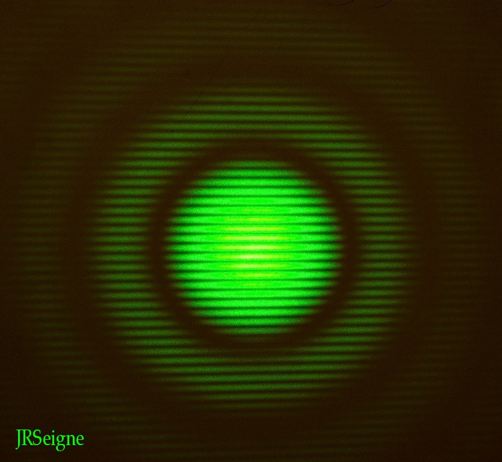

Sciences Physiques en MP*, Lycée
Clemenceau Nantes

La figure
d'interférences est obtenue
en éclairant avec un laser des petits trous d'Young disposés sur un axe
vertical. La figure d'interférences est constituée des segments
lumineux horizontaux (franges brillantes) séparés par des
bandes noires (franges sombres). Cette figure d'interférences s'inscrit
dans la figure de diffraction due à la forme circulaire identique des
deux trous d'Young.
Ce banc, constitué
par une succession
d'ailettes, illustre les capacités de refroidissement, et plus
généralement de transferts thermiques, des dispositifs présentant des
ailettes comme les moteurs thermiques, les transistors de puissance,
les microprocesseurs, les alimentations que l'on rencontre en
électricité. En augmentant la surface d'échange, on favorise les
transferts thermiques par convection. On peut s'asseoir sur ce banc
même lorsqu'il est en plein soleil l'été sans se brûler ! Photographie
réalisée sur
l'esplanade Bonaparte de Saint-Raphaël (83).
Vous pouvez observer un phénomène de moiré
sur la vidéo ci-dessous en cliquant sur la flèche... Ce phénomène est
lié à une variation rapide du contraste. Il est obtenu sur la vidéo en
observant deux filets de protection identiques et constitués d'un
maillage régulier formé de carrés de l'ordre du millimètre. On observe
les deux maillages l'un par dessus l'autre en quelque sorte. Ces filets
de protection sont ceux tendus entre les pattes d'une girafe gonflable
constituant une zone de jeux pour enfants. On voit très bien les effets
de moiré dans la partie supérieure de ces filets. La position relative
(orientation et inclinaison) des deux filets était sans cesse modifiée
en raison d'un vent important. La vidéo peut prendre un certain temps
lors du téléchargement car elle est d'environ 7Mo.
Expérience de l'hélice de couleurs. Cette expérience utilise une source
de lumière blanche comme on peut le voir sur la photographie
ci-dessous. La lumière traverse un polariseur rectiligne avant de se
propager dans une solution de fructose très concentrée, placée dans
l'éprouvette graduée. Sur la photographie, on peut voir un filtre vert
amovible situé entre
la source lumineuse et le polariseur rectiligne. Il permet de passer
d'une
lumière blanche à une lumière relativement monochromatique (la bande
passante du filtre est centrée sur 532nm et sa largeur est d'environ
20nm).
L'effet d'hélice de couleurs est la conséquence de deux phénomènes :
d'une part la
diffusion de la lumière par les molécules de la solution de fructose et
d'autre part le pouvoir rotatoire du fructose. Sous l'effet du champ
électrique de
la lumière, on a une diffusion de type dipôle oscillant. Les moments
dipolaires rayonnants sont alignés sur le champ électrique excitateur.
Or, il n'y a pas de rayonnemment dans la direction du moment dipolaire
mais au contraire un maximum d'émission dans une direction
perpendiculaire. On retiendra donc qu'il n'y a pas de rayonnement dans
la
direction du champ électrique. Comme celui-ci tourne dans le plan
horizontal du fait du pouvoir rotatoire du fructose au fur et à mesure
de la propagation verticale de la lumière, la direction
d'observation se trouve parfois dans la direction du champ électrique.
Conséquence : il n'y a pas de lumière perçue. Cela se voit bien sur la
vidéo réalisée
en lumière verte. Entre deux positions successives sombres vues par
l'observateur, le champ
électrique a donc tourné de 180°. Lorsque l'on utilise la lumière
blanche, les choses se compliquent car le pouvoir rotatoire du fructose
dépend de
la longueur d'onde. Si le vert provoque un minimum de rayonnement dans
la direction de l'observateur, cela n'est pas le cas des autres
longueurs d'onde. En simplifiant un peu, on peut dire que l'on voit
alors la couleur complémentaire du vert (rose-magenta). Il ne reste
plus
qu'à faire tourner le polariseur rectiligne placé en entrée du
dispositif pour voir l'hélice de couleur évoluer comme vous pouvez le
constater sur les deux vidéos proposées plus bas.